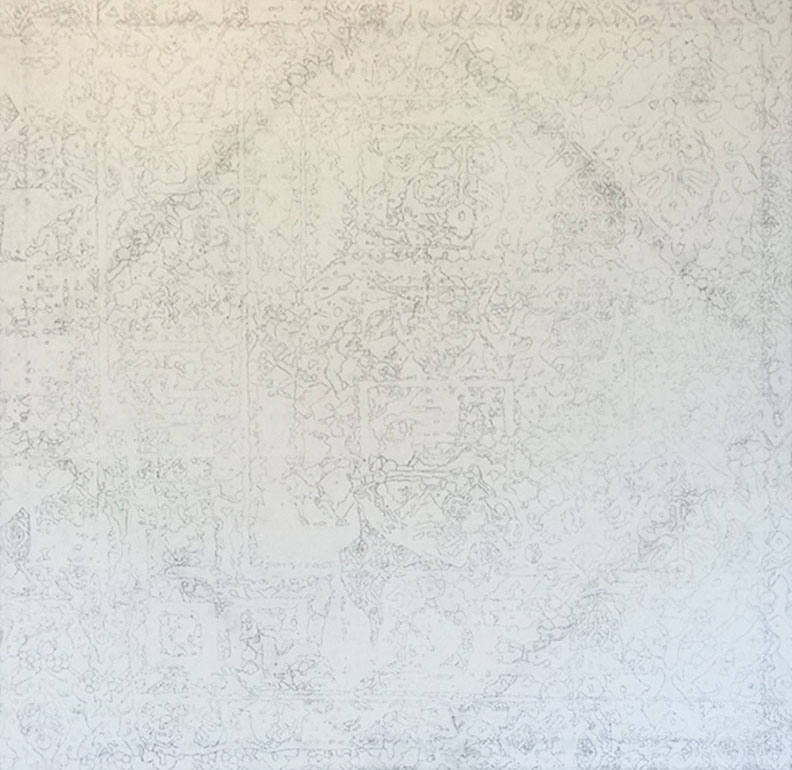

Irene Hernandez
Paintings
Disintegrating Fleur
2015
Acrylic on Canvas
30 in x 30 in

This is inspired by Islamic Textiles. It is a combination of a faded textile and one particular pattern in several sizes. I wanted to show the disintegration of textiles over time, and how it is a process.